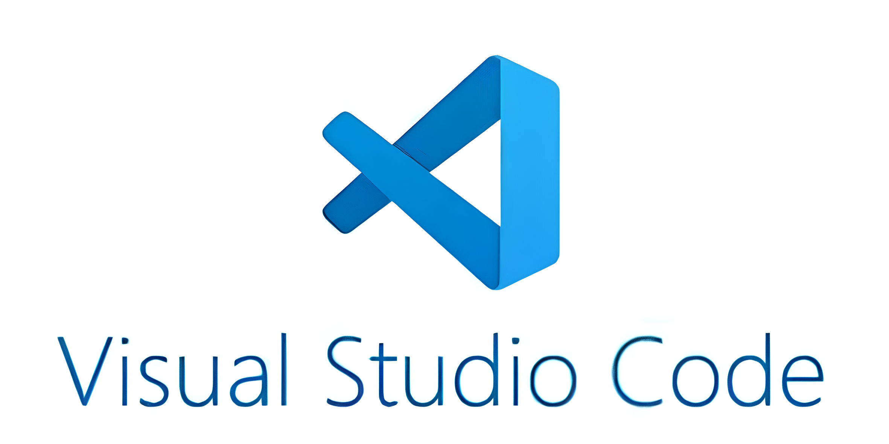
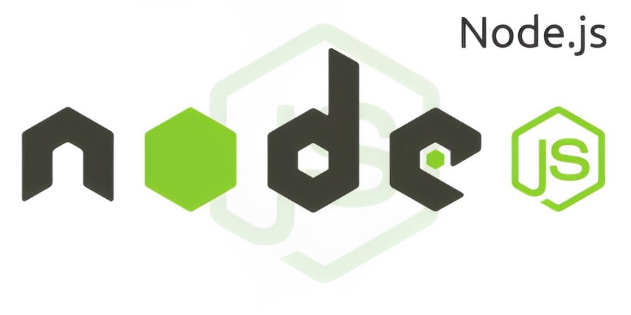

Conheça a extensão JavaScript que é usada no desenvolvimento de sites
e aplicações web que podem ser executados tanto do lado do usuário como do lado do servidor.
Fonte: Awari
APRESENTAÇÃO
Este site foi criado com o intuito de ensinar o básico de TypeScript para
os interessados. Aqui você aprenderá
o que é um objeto, uma classe, uma função e muito mais.
OBJETO
Este site foi criado com o intuito de ensinar o básico de TypeScript para os
interessados. Aqui você aprenderá
o que é um objeto, uma classe, uma função e muito mais.
CLASSE
Este site foi criado com o intuito de ensinar o básico de TypeScript para os
interessados. Aqui você aprenderá
o que é um objeto, uma classe, uma função e muito mais.
FUNÇÃO
Este site foi criado com o intuito de ensinar o básico de TypeScript para os
interessados. Aqui você aprenderá
o que é um objeto, uma classe, uma função e muito mais.
CONFIGURAÇÕES NECESSÁRIAS PARA UTILIZAR TYPESCRIPT
Para que seja possível programar em TypeScript é necessário que seja feita a instalação
de algumas ferramentas, que são:
1. Visual Studio Code

Esse editor de código fonte foi desenvolvido pela Microsoft e lançado em 2015
com o objetivo de desenvolver aplicações. O VSCode é leve, multiplataforma, gratuito e de código aberto.
As funcionalidades dessa ferramenta são diversas. Além do usuário poder escolher
o layout por meio das configurações, ele também terá acesso a esses recursos:
- Depuração de código;
- IntelliSense;
- Variedade de extensões e muito mais.
Mais informações:
- Disponível para: Windows, Mac OS e Linux.
- Outras linguagens de programação: JavaScript, C, C++, PHP, C#, Java e Python.
- Onde instalar: https://code.visualstudio.com/
Instalação para Windows
A instalação pode ser feita através do link https://code.visualstudio.com/
Passo 1:
Após acessar o link oficial, escolha a opção para Windows e aguarde o download
automático, que ficará visível no canto inferior da tela do seu aparelho.

Ao clicar na aba de download, clique em “executar” se uma janela abrir. Após essa
janela, o instalador deve selecionar a língua desejada. Ainda não possui o instalador da ferramenta na língua
portuguesa, por isso, prossiga com o inglês.
Após isso, a aba de boas vindas do VS Code será aberta, clique em next para prosseguir
com a instalação.

Os próximos passos serão para seleção do local de instalação, que para deixar padrão
basta clicar em “Next”. Depois, dará a opção de alteração do nome do programa, basta clicar em “Next” para
continuar padrão. Após esses processos, aparecerá a seguinte tela:

Pode marcar todas as opções e prosseguir, assim como mostra a imagem. Logo após,
aparecerá um resumo da instalação, clique em “Install” para instalar. Uma barra de carregamento indicará o
progresso de instalação, quando completada clique em “Finish” para finalizar.
O VS Code agora pode ser utilizado!
COMO UTILIZAR O VISUAL STUDIO CODE
O Vs Code possui diversas funcionalidades, se você começou a utilizar esta ferramenta
recentemente, venha conhecê-las:
- Como abrir pastas no Vs Code?
Esse procedimento é bem simples, e aqui vamos mostrar duas maneiras
diferentes de
fazê-lo.
1º Abrir pastas da Área de Trabalho:
As pastas são necessárias porque são nelas que seus códigos ficarão
guardados.
-> Em sua área de trabalho, clique com o botão direito do mouse e aperte em
“Novo” e depois em “Pasta”, coloque um nome em sua pasta e abra o VS Code.
-> No VS Code, no canto superior esquerdo, clique em “File” (arquivo em
português).

Após isso, clique em “Open Folder” (abrir pasta) e selecione a pasta criada
em sua área de trabalho.
2 º Criar pastas sem sair do VS Code:
Caso ainda não tenha criado sua pasta, basta ir em “File” > “Open Folder” >
selecionar o local que deseja criar sua pasta, clicar em “Nova Pasta” e selecioná-la. Você também pode
utilizar o atalho “Ctrl + k” ou “Ctrl + o” e seguir o mesmo procedimento.

- Como instalar extensões?
O VS Code possui uma gama de extensões para auxiliar no processo da criação
de códigos. Com elas, é possível encontrar muitos recursos e funcionalidades, independente da linguagem
utilizada. As extensões ficam localizadas no menu lateral. Inclusive, para mudar o idioma do seu VS Code
para portugês, basta pesquisar por “Português Brasil” e instalar.

- Como trocar o layout do meu VS Code?
Também é possível trocar o layout do VS Code de acordo com a preferência do
usuário.
Para isso, basta ir na Configurações, localizadas no canto inferior esquerdo, clicar em “Themes” (temas) e
depois ir
em “Color themes”, lá serão mostradas algumas opções e você ainda pode pesquisar por outras em “+ Browse
Additional
Color Themes…” (Procure por temas de cores adicionais).

Conheça alguns (dos muitos) temas:
- Dark Modern

- Light Modern

- Kimble Dark

- Tomorrow Night Blue

Para saber mais detalhes, consulte o site oficial do VS Code: https://code.visualstudio.com/docs/getstarted/themes e descubra mais temas e
maneiras de
deixar seu ambiente de programação do jeito que preferir.
2. Node.js

O Node.JS é utilizado na compilação do TypeScript por sua capacidade de executar
scripts em JavaScript. O “tsc” é um compilador embutido do TypeScript que traduz essa linguagem para
JavaScript, para que possa ser executado em ambientes compatíveis com o JavaScript (incluindo o Node.Js). A
integração do Node.js na compilação do TypeScript é feita usando-se ferramentas como o “npm” para instalar o
TypeScript localmente no projeto, e então o tsc pode ser usado na compilação dos arquivos TypeScript em
JavaScript.
Instalação para Windows
- Acesse o site oficial (https://nodejs.org/en) e escolha a opção para windows.
- Clique sobre o arquivo que foi baixado e pressione “Next” para avançar.
- Para continuar, é necessário aceitar os termos do Contrato de Licença do Usuário
Final e apertar “Next”.
- Pressione “Next” para deixar a pasta de destino padrão.
- Após isso, aparecerá a tela para seleção dos recursos. Se quiser deixá-los
padrão, clique em “Next”.
- Na próxima tela, clique em Automatically install the necessary tools (Instalar
automaticamente as ferramentas necessárias) e depois “Next” para avançar. Após basta clicar em “install”
(caso pergunte se deseja permitir que o instalador faça alterações, permita).
- Uma janela de prompt será aberta. Para prosseguir, basta clicar duas vezes em
qualquer tecla.
- Após isso, uma interface aparecerá. Clique em “ENTER”.
- Depois, basta abrir um prompt de comando (cmd) e digitar:
node -v e
npm -v
para verificar a versão instalada.
Instalação concluída!
Após a instalação do Node.Js, abra um terminal (cmd ou PowerShell) e digite npm
install -g typescript para compilar seus códigos TypeScript com tsc durante a programação.
Mais informações:
Como executar o meu código?
Primeiro, é necessário realizar a compilação do código. No terminal do Visual Studio
Code (localizado no canto superior esquerdo), digite o seguinte comando:
npx tsc nome_do_seu_arquivo.ts
npx - é um executor de pacotes;
tsc - compilador do TypeScript;
nome_do_seu_arquivo - é o nome do arquivo que você criou para escrever
seu
código;
.ts - significa que seu código será feito na linguagem TypeScript.
Feito isso, deverá aparecer um arquivo com o mesmo nome mas com terminação .js
, assim como na imagem abaixo. Isso significa que o código que você escreverá, estará sendo traduzido para
JavaScript!

E para finalmente testar se seu código funciona (no terminal), o comando é:
node nome_do_seu_arquivo.js>
Você também pode testar seus códigos no seu navegador. Para isso, crie um arquivo com
terminação .html e basta digitar um ponto de exclamação para que uma estrutura básica de uma
página html seja criada. Dentro da tag
body, escreva como o exemplo da imagem abaixo:

IMPORTANTE: para ser executado no navegador, troque o “console.log( )” por
“document.write( )” no seu código.